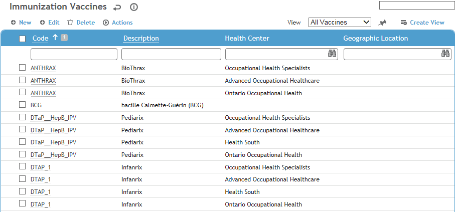
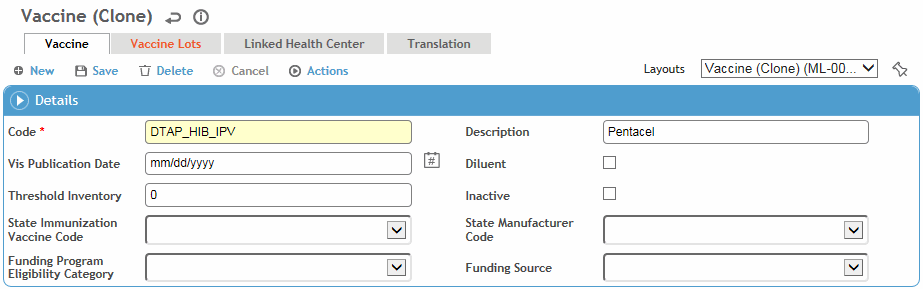

This table contains the name and general details of vaccines.
To filter the list of records, enter a few characters in one or more of the fields at the top followed by an asterisk, then press Enter.

Click a link to edit, or click New.

Enter the Code and Description.
Enter the Date the VIS was published, if available. If populated, an immunization record will show this date and enter the current date as the Date VIS Distributed.
Indicate if this vaccine is diluted with a Diluent.
Select the minimum number of doses that should be kept in Inventory. If the inventory amount for this vaccine drops below this number, the Inventory menu name appears in red.
The last four fields (State Immunization Vaccine Code, State Manufacturer Code, Funding Program Eligibility Category, and Funding Source) are for use by New York City and Massachusetts users only who are set up to submit immunizations to the appropriate municipal oversight body. See note below.
The Vaccine Lots tab displays any existing records from the ImmunizationVaccineLot table; to add a new lot, click New.
To define inventory thresholds for a particular health center, click New on the Linked Health Center tab, choose the health center and enter the Threshold Inventory that this health center should maintain of this vaccine.
Click Save.
Setup for NYC/Massachusetts requires:
- Relevant codes are defined on the ImmunizationInjectionSite, ImmunizationRoute, Vaccine, and EthnicGroup look-up tables.
- Jurisdiction look-up table includes “New York City” or “Massachusetts”
- HealthCenter that will be administering the immunizations must be set to the appropriate jurisdiction (NYC or one in Massachusetts)
- Immunization system settings contain relevant codes provided by the municipal body.